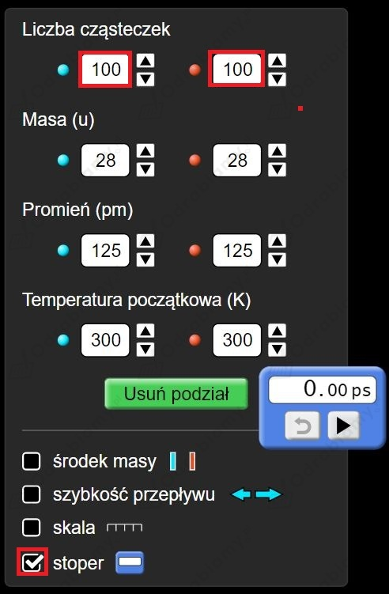
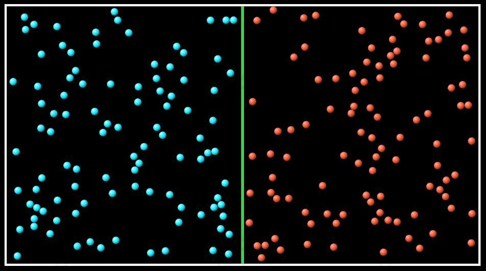
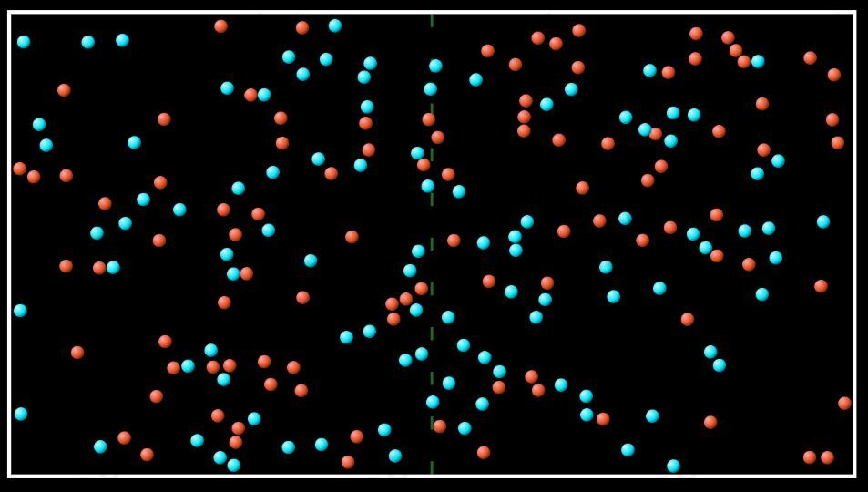

I. dyfuzja - D. W całym mieszkaniu...
Cząsteczki powietrza z kuchni rozprzestrzeniły się samorzutnie w całej objętości mieszkania.
II. zwiększenie energii wewnętrznej dzięki wykonaniu pracy - A. Podczas hamowania...
Siła tarcia pomiędzy klockami a tarczami hamulcowymi wykonała pracę i spowolniła obrót kół. Część energii kinetycznej ruchu obrotowego kół została wydzielona w postaci ciepła, co spowodowało zwiększenie temperatury klocków i tarcz.
II. zwiększenie energii wewnętrznej dzięki wykonaniu pracy - C. Gdy mocno pozieramy...
Siła tarcia pomiędzy trącymi o siebie powierzchniami dłoni wykonuje pracę i spowalnia ruch naszych dłoni. Część energii kinetycznej naszych dłoni zostaje wydzielona w postaci ciepła, co powoduje zwiększanie temperatury naszych dłoni.
III. zwiększanie energii wewnętrznej dzięki przepływowi ciepła - B. Łyżka się rozgrzała...
Łyżka jest wykonana z przewodnika cieplnego (metalu) i na skutek różnicy temperatur wody w garnku i łyżki nastąpi przepływ ciepła z wrzątku do łyżki - temperatura łyżki zwiększy się.
Średnia energia kinetyczna cząsteczek danego ciała jest wprost proporcjonalna do temperatury tego ciała.
a)
Lód i woda mają taką samą temperaturę (0°C), zatem cząsteczki lodu i wody mają takie same średnie energie kinetyczne. Lód i woda to ta sama substancja tylko w innym stanie skupienia, więc są zbudowane z takich samych cząsteczek - H2O. Zatem cząsteczki budujące kostkę lodu i składające się na wodę w szklance poruszają się z takimi samymi średnimi prędkościami.
b)
Cząsteczki kostki lodu o wyższej temperaturze mają większą średnią energię kinetyczną. Zatem cząsteczki kostki lodu o temperaturze -10°C poruszają się z większymi średnimi prędkościami od cząsteczek kostki lodu o temperaturze -20°C.
c)
Kostka lodu i kra lodowa mają taką samą temperaturę (-10°C), zatem cząsteczki lodu budujące te dwa ciała maja takie same średnie energie kinetyczne. Stąd cząsteczki budujące kostkę lodu i krę lodową poruszają się z takimi samymi średnimi prędkościami.
a)
Całkowita energia oddana przez wodę i pobrana przez dwie stalowe śruby jest równa:
Śruby są jednakowe i mają takie same masy, więc każda ze śrub pobierze taką samą energię .
Energia jednej śruby zwiększyła się o 900 J.
b)
Przepływ energii (ciepła) z wody do śrub spowodował ich ogrzanie o 10°C. Zatem temperatura każdej ze śrub zwiększyła się o 10°C.
Korzystamy z symulatora dostępnego na stronie (poniższa ikona po kliknięciu otwiera link zewnętrzny):
a) Korzystamy z panelu bocznego pozwalającego na ustawianie odpowiednich parametrów. Liczbę cząsteczek możemy ustawić na dowolną różną od zera, ale im więcej ich jest tym mniej fluktuujące (zmienne) wyniki otrzymamy.
Zaznaczamy też chęć skorzystania ze stopera.

Sytuacja początkowa:

Usuwamy podział i odliczamy czas na stoperze aż cząsteczki całkowicie się wymieszają (wymieszanie cząsteczek oceniamy indywidualnie na podstawie graficznej symulacji).
Stan całkowitego wymieszania:

Czas po jakim w układzie nastąpiło całkowite wymieszanie.
Im wyższa jest temperatura cząsteczek tym szybciej poruszają się one i całkowite wymieszanie następuje szybciej (dla temperatury 500 K).
Im mniejsza jest masa cząsteczek tym szybciej się one poruszają i całkowite wymieszanie następuje szybciej (dla masy 10 u).
b) Kiedy temperatury cząsteczek są różne, zauważamy żer jedne z nich poruszają się wyraźnie szybciej od drugich. Po zwolnieniu przegrody w wyniku wzajemnych zderzeń cząsteczek te o większej temperaturze spowalniają, a te o mniejszej temperaturze przyspieszają. W stanie całkowitego wymieszania temperatura wszystkich cząsteczek ustala się w zakresie od początkowej minimalnej temperatury do początkowej maksymalnej temperatury.
Szybciej będzie topniała nieowinięta w tkaninę kostka lodu. Tkanina nie jest przewodnikiem cieplnym, więc będzie izolowała kostkę lodu w nią owiniętą od otoczenia, utrudniając jej pobieranie energii z otoczenia.
Podczas gdy stopniała połowa nieowiniętej kostki, objętość owiniętej kostki zmalała w mniejszym stopniu.